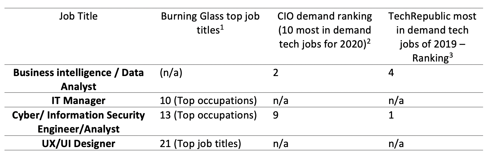
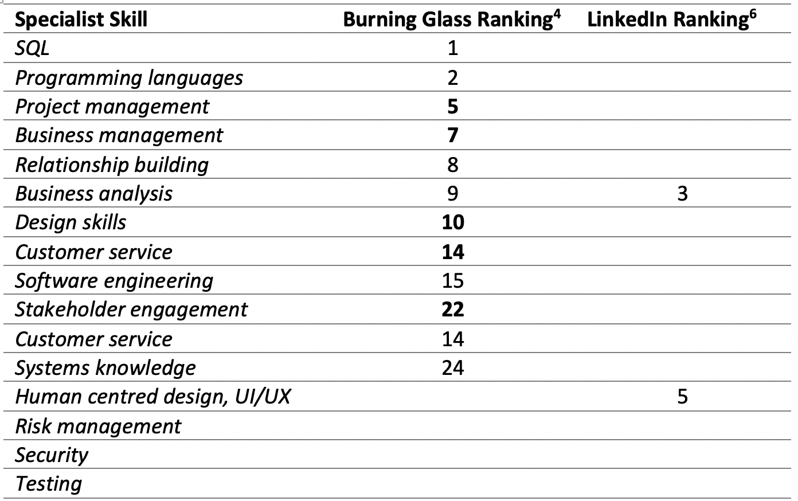
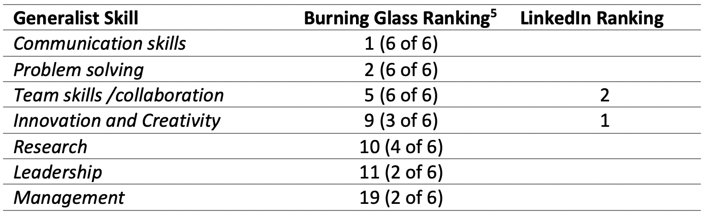
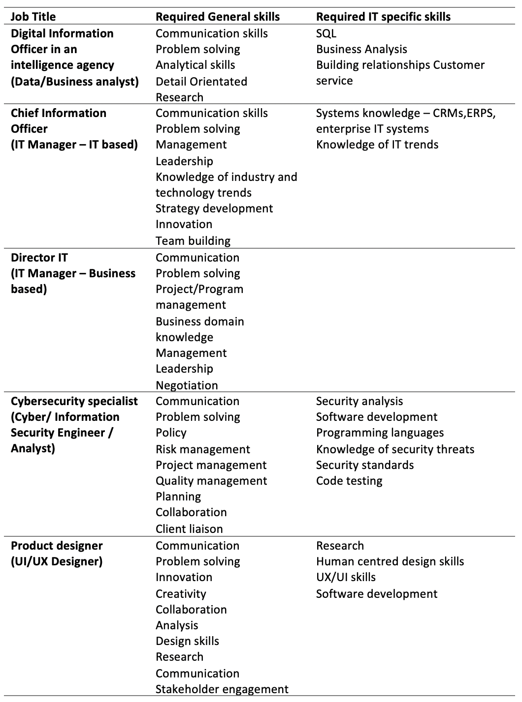

Industry demand
The table presented below displays the job titles for the group's ideal jobs and the reported demand from employers for 2019-2020. The variation in ranking may reflect more technical sources, in particular Tech Republic, not viewing some titles as technical jobs. This is reflected in where these jobs may fall in different companies, for instance UX/UI Designers are often situated in corporate communications departments rather than IT, and similarly IT managers may be situated within the business in business partner relationships rather than in the IT department. There would also be less structural positions and thus advertisements for management positions versus practitioner positions. Business intelligence and data analysts are also often situated within the business versus the technical IT department. Based on personal experience and observations of group members, this likely also reflects the increasing integration of technology skills into roles throughout the business where both technical skills and specialist domain knowledge are required.

Specialist & Generalist Skills
The tables below display the required skills for the group against demand data from Burning Glass (BG) and LinkedIn. The group skill set included 7 of the top 10 listed technical skills for BG and 5 of the top 10 generalist skills. This is only an estimation as some skill requirements listed by the group would include several specific skills, for example programming languages. We also know from the professional interview carried out with a security consultant, that security requires experience in a range of other specialist skills. The top 5 soft (generalist) skills listed with LinkedIn included persuasion, adaptability and emotional intelligence are not looked at in the BG data. The top 3 BG generalist skills that did not formally feature in our group’s listing were organisational skills, writing, troubleshooting and planning. On reflection it is clear that these skills would be required in the roles that we looked at but were not considered by our team to be as prominent as they clearly are by employers. This clearly provides guidance for the team on where to put more emphasis and how to describe their skill sets more productively to potential employers.
Looking at the following table of skills made up by the team for the positions chosen, it is clear that generalist skills of communication, problem solving and collaboration in teams are critical to the success of all roles. Leadership and management were the only generalist skills that were not widely shared. There is significantly more variation when it comes to specialist skills as these are more specific, require dedicated effort to learn, and are not required in every role. Four of our roles were technical specialist roles, while the two management roles are broader and spend most of their time engaging with the business about technology rather than exercising technical skills. In terms of the skills listed as required by the team the technical roles would almost certainly include knowledge of languages and systems listed in the top 10 industry skills. Again the team members can draw on the lists provided to finetune the matters they choose to learn about. The top 10 hard skills listed in the more recent LinkedIn data include broad areas such as cloud computing and artificial intelligence which may also include some of the more specific skills listed in the BG data.


Summary
In summary, the skill set requirements of our group and the skills that are sought by employers have a good correlation. The industry data provides additional direction on specific training and self-marketing, particularly with the soft skill set, that the group will be keen to capitalise on. Perhaps one of the most interesting observations was the absence of security and risk management as a subject on the top skills lists. Both group professional experience and the professional interview confirm that security knowledge and skills are in demand with limited supply. This may not be reflected in the data due to the relative specialisation and therefore smaller numbers of security specialists versus other IT specialists such as developers. Demand for security skills may also visibly increase over the next year due to greater federal government investment in cybersecurity and new requirements from the financial prudential regulator, the Australian Prudential Regulation Authority, for insurance, and superannuation industries to comply with new cybersecurity standards. These standards are set out under the Australian Prudential Standard CPS 234 Information Security (Australian Prudential Regulation Authority 2019).

Please find the full reference list below.
...[1] Burning Glass Technologies 2018, Labour Insight Jobs ‘Top Burning Glass Occupations’, Burning Glass Technologies, viewed 18 October 2020, [https://rmit.instructure.com/courses/70638/files/13861325/download?wrap=1]
[2] White, S. K 2020, The 10 most in-demand tech jobs for 2020 – and how to hire for them, CIO Australia, viewed 18 October 2020, [https://www.cio.com/article/3235944/hiring-the-most-in-demand-tech-jobs-for-2018.html]
[3] Rayome, A 2018, The 10 most in-demand tech jobs of 2019 , TechRepublic, viewed 18 October 2020, [https://www.techrepublic.com/article/the-10-most-in-demand-tech-jobs-of-2019/]
[4] Burning Glass Technologies 2018, Labour Insight Jobs ‘Skills in Greatest Demand (Specialised Skills), Burning Glass Technologies, viewed 18 October 2020, [https://rmit.instructure.com/courses/70638/files/13861434/download?wrap=1]
[5] Burning Glass Technologies 2018, Labour Insight Jobs ‘Skills in Greatest Demand (Baseline Skills), Burning Glass Technologies, viewed 18 October 2020, [https://rmit.instructure.com/courses/70638/files/13861187/download?wrap=1]
[6] Anderson, B 2020, The Most In Demand Hard and Soft Skills of 2020, LinkedIn, viewed 18 October 2020, [https://business.linkedin.com/talent-solutions/blog/trends-and-research/2020/most-in-demand-hard-and-soft-skills]
[7] Australian Prudential Regulation Authority 2019, CPS 234 Information Security, Australian Prudential Regulation Authority, viewed 18 October 2020, [https://www.legislation.gov.au/Details/F2018L01745].
© Untitled. All rights reserved. | Design by TEMPLATED.